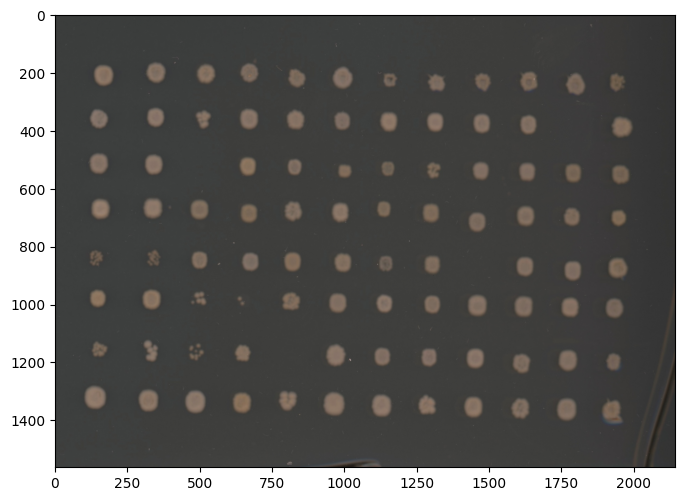
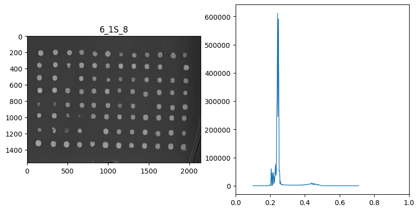
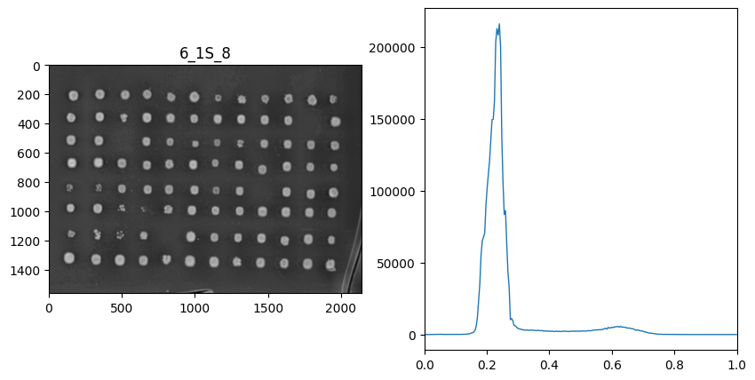

Getting Started#
Getting started with image processing is straightforward. There’s three classes of operations in phenotypic: ImageOperation, MeasureFeature, and ImagePipeline.
ImageOperation(s): processes that operate on the data of an image in preparation for feature extraction withMeasureFeature.MeasureFeature(s) extract measurements from the objects within the image based on the pixel values.ImagePipeline(s) are a collection of operations and measurements compiled into a single class for convenience.
To get started with phenotypic, it’s fastest to start by using one of the pipelines in phenotypic.prefab. Below we use phenotypic.prefab.HeavyWatershedPipeline, which was used with hand scanner images of Kluveromyces Marxianus.
import phenotypic as pht
filepaths = [x for x in
pht.data.yield_sample_dataset(mode='filepath')]
# This returns the relative filepaths for this sample data
# While unconventional for a loader, this is done to demonstrate importing an directory of images.
filepaths
[PosixPath('../../../../../src/phenotypic/data/PhenoTypicSampleSubset/2_1S_5.jpg'),
PosixPath('../../../../../src/phenotypic/data/PhenoTypicSampleSubset/2_1S_6.jpg'),
PosixPath('../../../../../src/phenotypic/data/PhenoTypicSampleSubset/2_1S_7.jpg'),
PosixPath('../../../../../src/phenotypic/data/PhenoTypicSampleSubset/2_1S_8.jpg'),
PosixPath('../../../../../src/phenotypic/data/PhenoTypicSampleSubset/3_1S_5.jpg'),
PosixPath('../../../../../src/phenotypic/data/PhenoTypicSampleSubset/3_1S_6.jpg'),
PosixPath('../../../../../src/phenotypic/data/PhenoTypicSampleSubset/3_1S_7.jpg'),
PosixPath('../../../../../src/phenotypic/data/PhenoTypicSampleSubset/3_1S_8.jpg'),
PosixPath('../../../../../src/phenotypic/data/PhenoTypicSampleSubset/4_1S_5.jpg'),
PosixPath('../../../../../src/phenotypic/data/PhenoTypicSampleSubset/4_1S_6.jpg'),
PosixPath('../../../../../src/phenotypic/data/PhenoTypicSampleSubset/4_1S_7.jpg'),
PosixPath('../../../../../src/phenotypic/data/PhenoTypicSampleSubset/4_1S_8.jpg'),
PosixPath('../../../../../src/phenotypic/data/PhenoTypicSampleSubset/5_1S_5.jpg'),
PosixPath('../../../../../src/phenotypic/data/PhenoTypicSampleSubset/5_1S_6.jpg'),
PosixPath('../../../../../src/phenotypic/data/PhenoTypicSampleSubset/5_1S_7.jpg'),
PosixPath('../../../../../src/phenotypic/data/PhenoTypicSampleSubset/5_1S_8.jpg'),
PosixPath('../../../../../src/phenotypic/data/PhenoTypicSampleSubset/6_1S_5.jpg'),
PosixPath('../../../../../src/phenotypic/data/PhenoTypicSampleSubset/6_1S_6.jpg'),
PosixPath('../../../../../src/phenotypic/data/PhenoTypicSampleSubset/6_1S_7.jpg'),
PosixPath('../../../../../src/phenotypic/data/PhenoTypicSampleSubset/6_1S_8.jpg')]
Processing your first image#
Here we’re gonna import the last image in the dataset, since its from the last timepoint and should have reasonable growth. Accepted file formats are jpegs, tiffs, pngs, and RAW files.
Important things to note:
bit_depthwill have an important role in memory usage and accuracy. For jpegs, this will always be 8. For other image formats, consult your camera documentation for information. You may also find this information in your image metadata, depending on the format. PhenoTypic supports bit depths of 8 and 16. If not provided, PhenoTypic will try to guess this information from the imported image data.
# We're gonna import the last image in the dataset, lets make an image with a grid in 96 array format
# Accepted filepaths are jpegs, tiffs, pngs, and RAW format files
# These images are jpegs so we set a bit depth of 8.
image = pht.GridImage.imread(filepaths[-1], nrows=8, ncols=12, bit_depth=8)
Let’s then view the image. PhenoTypic uses matplotlib as the backend for compatibility, which allows for streamlined prototyping in Jupyter. All plotting methods return (plt.Figure, plt.Axes) for easy post plotting editing. You can also plot directly to an axes. There’s a few different ways to view your image and its internal states.
View the input image
Image.show() # Shows the input image
fig, ax = Image.show() # If you need the figure or axes for further processing
fig.show()
Viewing specific components
rgb_fig, rgb_ax = Image.rgb.show() # Shows the rgb array if its available
gray_fig, gray_ax = Image.gray.show() # Shows the grayscale array.
Also available for other image components such as enh_gray, objmask, objmap, …
Viewing overlay information
overlay_fig, overlay_ax = Image.show_overlay()
overlay_fig.show()
fig, ax = image.show()
fig.show() # Only needed if the plot doesn't automatically show

You can always visualize your image with Image.show(). This returns a matplotlib figure and axes object, but should plot the figures inside a jupyter notebook. The axis labels are the pixel rows and columns that show the size of your photo. If your original input is rgb or grayscale, Image.show() will return the original image. To show the grayscale converted version of your image, use Image.gray.show().
Image Operations#
ImageOperations transform the internal image data for different types of operations.
The different types of operatiosn are as follows
ImageCorrecter: Transformations that improve the quality of the data, such as aligning the plateImageEnhacer: Preprocesses theenh_grayproperty of the image, to improve detectionObjectDetector: Creates theobjmaskandobjmaparray of the image to mark where objects in the image areMapModifier: Refines theobjmaskandobjmapof the image to make sure only the targets you want are measured
You set the parameters these operations use in the initial creation of these objects, but phenotypic now includes a useful widget to finetune these parameters.
image.enh_gray.histogram()
(<Figure size 1000x500 with 2 Axes>,
array([(<Figure size 1000x500 with 2 Axes>, <Axes: title={'center': '6_1S_8'}>),
<Axes: >], dtype=object))

This is a copy of the grayscale matrix that has not been modified yet, but will be used for detection. From the histogram, we can see the contrast is not maximized, so lets apply CLAHE (Contrast-limited adaptive histogram equalization).
from phenotypic.enhance import CLAHE
enhance = CLAHE()
new_image = enhance.apply(image)
new_image.enh_gray.histogram()
(<Figure size 1000x500 with 2 Axes>,
array([(<Figure size 1000x500 with 2 Axes>, <Axes: title={'center': '6_1S_8'}>),
<Axes: >], dtype=object))

Here we can see that the contrast was maximized. We can manually tune the parameters further to get different, results, but that can be somewhat cumbersome. PhenoTypic provides a widget feature when used with jupyter notebook like below to tune parameters. All ImageOperations and ImagePipeline objects have access to this. This allows us to preview parameter changes to the pipeline before we execute it.
enhance.widget(image)
print(enhance.kernel_size)
None
When we press “update view” the CLAHE object’s internal settings change, and we can see the new results of the operation before we apply it. View the enh_gray image to see the changes.
HeavyWatershedPipeline#
For ease of use, PhenoTypic supplies built-in pipelines that we have curated for different projects we use internally. Here’s a demo of the HeavyWatershedPipeline.
The HeavyWatershedPipeline consists of the following operations:
GaussianBlurCLAHEMedianEnhancerWatershedDetectorBorderObjectRemoverMinResidualErrorReducerGridAlignerWatershedDetectorNote: this is applied twice since the alignment may improve the refinement resultsMinResidualErrorReducerBorderObjectRemoverMaskFill
It also has the following measurements:
MeasureShapeMeasureIntensityMeasureTextureMeasureColor
You can apply ImagePipeline and ImageOperation in place or make a new copy for comparison.
# return a copy
new_image = pipe.apply(image)
# in place
pipe.apply(image, inplace=True)
from phenotypic.prefab import HeavyWatershedPipeline
pipe = HeavyWatershedPipeline(border_remover_size=80)
pipe.widget(image)
pipe.apply(image, inplace=True)
fig, ax = image.show_overlay() # All operations that are plots, return a figure and axes
fig.show()
---------------------------------------------------------------------------
KeyboardInterrupt Traceback (most recent call last)
File ~/work/PhenoTypic/PhenoTypic/src/phenotypic/abc_/_image_operation.py:79, in ImageOperation._apply_to_single_image(cls_name, image, operation, inplace, matched_args)
78 try:
---> 79 return operation(image=image if inplace else image.copy(), **matched_args)
80 except KeyboardInterrupt:
File ~/work/PhenoTypic/PhenoTypic/src/phenotypic/grid/_min_residual_error_reducer.py:46, in MinResidualErrorReducer._operate(image)
45 # Get the section info
---> 46 section_info = linreg_stat_extractor.measure(image)
48 # Isolate the object id with the smallest residual error
File ~/work/PhenoTypic/PhenoTypic/src/phenotypic/tools/funcs_.py:234, in validate_measure_integrity.<locals>.decorator.<locals>.wrapper(*args, **kwargs)
233 # execute the original method
--> 234 result = func(*args, **kwargs)
236 # re-hash and compare
File ~/work/PhenoTypic/PhenoTypic/src/phenotypic/abc_/_grid_measure.py:22, in GridMeasureFeatures.measure(self, image)
21 if not isinstance(image, GridImage): raise GridImageInputError()
---> 22 output = super().measure(image)
23 if not isinstance(output, pd.DataFrame): raise OutputValueError("pandas.DataFrame")
File ~/work/PhenoTypic/PhenoTypic/src/phenotypic/tools/funcs_.py:234, in validate_measure_integrity.<locals>.decorator.<locals>.wrapper(*args, **kwargs)
233 # execute the original method
--> 234 result = func(*args, **kwargs)
236 # re-hash and compare
File ~/work/PhenoTypic/PhenoTypic/src/phenotypic/abc_/_measure_features.py:86, in MeasureFeatures.measure(self, image, include_meta)
84 matched_args = self._get_matched_operation_args()
---> 86 meas = self._operate(image, **matched_args)
87 if include_meta:
File ~/work/PhenoTypic/PhenoTypic/src/phenotypic/grid/_grid_linreg_stats_extractor.py:63, in MeasureGridLinRegStats._operate(self, image)
62 # Get the current column linreg info
---> 63 col_m, col_b = image.grid.get_centroid_alignment_info(axis=1)
65 # convert array to dataframe for join operation
File ~/work/PhenoTypic/PhenoTypic/src/phenotypic/core/_image_parts/accessors/_grid_accessor.py:131, in GridAccessor.get_centroid_alignment_info(self, axis)
130 # create persistent grid_info
--> 131 grid_info = self.info()
133 # allocate empty vectors to store m & b for all values
File ~/work/PhenoTypic/PhenoTypic/src/phenotypic/core/_image_parts/accessors/_grid_accessor.py:63, in GridAccessor.info(self, include_metadata)
56 """
57 Returns a DataFrame containing basic bounding box measurement data plus any object's grid membership.
58
(...)
61 parent's image grid settings.
62 """
---> 63 info = self._root_image.grid_finder.measure(self._root_image)
64 if include_metadata:
File ~/work/PhenoTypic/PhenoTypic/src/phenotypic/tools/funcs_.py:234, in validate_measure_integrity.<locals>.decorator.<locals>.wrapper(*args, **kwargs)
233 # execute the original method
--> 234 result = func(*args, **kwargs)
236 # re-hash and compare
File ~/work/PhenoTypic/PhenoTypic/src/phenotypic/abc_/_grid_measure.py:22, in GridMeasureFeatures.measure(self, image)
21 if not isinstance(image, GridImage): raise GridImageInputError()
---> 22 output = super().measure(image)
23 if not isinstance(output, pd.DataFrame): raise OutputValueError("pandas.DataFrame")
File ~/work/PhenoTypic/PhenoTypic/src/phenotypic/tools/funcs_.py:234, in validate_measure_integrity.<locals>.decorator.<locals>.wrapper(*args, **kwargs)
233 # execute the original method
--> 234 result = func(*args, **kwargs)
236 # re-hash and compare
File ~/work/PhenoTypic/PhenoTypic/src/phenotypic/abc_/_measure_features.py:86, in MeasureFeatures.measure(self, image, include_meta)
84 matched_args = self._get_matched_operation_args()
---> 86 meas = self._operate(image, **matched_args)
87 if include_meta:
File ~/work/PhenoTypic/PhenoTypic/src/phenotypic/grid/_auto_grid_finder.py:71, in AutoGridFinder._operate(self, image)
70 # Calculate optimal edges using optimization
---> 71 row_edges = self.get_row_edges(image)
72 col_edges = self.get_col_edges(image)
File ~/work/PhenoTypic/PhenoTypic/src/phenotypic/grid/_auto_grid_finder.py:221, in AutoGridFinder.get_row_edges(self, image)
207 """
208 Extracts and returns the edges of nrows from the given image.
209
(...)
219 list: A list representing the edges of the nrows in the image.
220 """
--> 221 optimal_row_padding = self._get_optimal_row_pad(image=image)
222 return self._get_row_edges(
223 image=image,
224 row_padding=optimal_row_padding,
225 info_table=image.objects.info(include_metadata=False),
226 )
File ~/work/PhenoTypic/PhenoTypic/src/phenotypic/grid/_auto_grid_finder.py:167, in AutoGridFinder._get_optimal_row_pad(self, image)
166 partial_row_pad_finder = partial(self._find_padding_midpoint_error, image=image, axis=0, row_pad=0, col_pad=0)
--> 167 return int(self._apply_solver(partial_row_pad_finder, max_value=max_row_pad_size, min_value=0))
File ~/work/PhenoTypic/PhenoTypic/src/phenotypic/grid/_auto_grid_finder.py:269, in AutoGridFinder._apply_solver(self, partial_cost_func, max_value, min_value)
267 else:
268 return round(
--> 269 minimize_scalar(partial_cost_func, bounds=(min_value, max_value),
270 options={'maxiter': self.max_iter if self.max_iter else 1000,
271 'xatol' : self.tol},
272 ).x,
273 )
File ~/work/PhenoTypic/PhenoTypic/.venv/lib/python3.10/site-packages/scipy/optimize/_minimize.py:981, in minimize_scalar(fun, bracket, bounds, args, method, tol, options)
979 raise ValueError('The `bounds` parameter is mandatory for '
980 'method `bounded`.')
--> 981 res = _minimize_scalar_bounded(fun, bounds, args, **options)
982 elif meth == 'golden':
File ~/work/PhenoTypic/PhenoTypic/.venv/lib/python3.10/site-packages/scipy/optimize/_optimize.py:2351, in _minimize_scalar_bounded(func, bounds, args, xatol, maxiter, disp, **unknown_options)
2350 x = xf + si * np.maximum(np.abs(rat), tol1)
-> 2351 fu = func(x, *args)
2352 num += 1
File ~/work/PhenoTypic/PhenoTypic/src/phenotypic/grid/_auto_grid_finder.py:99, in AutoGridFinder._find_padding_midpoint_error(self, pad_sz, image, axis, row_pad, col_pad)
98 # Get grid info with these edges
---> 99 current_grid_info = super()._get_grid_info(image=image, row_edges=row_edges, col_edges=col_edges)
100 current_obj_midpoints = (current_grid_info.loc[:, [str(BBOX.CENTER_RR), str(GRID.ROW_NUM)]]
101 .groupby(str(GRID.ROW_NUM), observed=False)[str(BBOX.CENTER_RR)]
102 .mean().values)
File ~/work/PhenoTypic/PhenoTypic/src/phenotypic/abc_/_grid_finder.py:140, in GridFinder._get_grid_info(self, image, row_edges, col_edges)
125 """
126 Assembles complete grid information from row and column edges.
127
(...)
138 pd.DataFrame: Complete grid information table with ROW_NUM, COL_NUM, and SECTION_NUM columns.
139 """
--> 140 info_table = image.objects.info(include_metadata=False)
142 # Add row information
File ~/work/PhenoTypic/PhenoTypic/src/phenotypic/core/_image_parts/accessors/_objects_accessor.py:108, in ObjectsAccessor.info(self, include_metadata)
103 """Returns a panda.DataFrame containing basic information about each object's label, bounds, and centroid in the image.
104
105 This is useful for joining measurements across different tables.
106 """
107 info = pd.DataFrame(
--> 108 data=regionprops_table(
109 label_image=self._root_image.objmap[:],
110 properties=['label', 'centroid', 'bbox'],
111 ),
112 ).rename(columns={
113 'label' : OBJECT.LABEL,
114 'centroid-0': str(BBOX.CENTER_RR),
115 'centroid-1': str(BBOX.CENTER_CC),
116 'bbox-0' : str(BBOX.MIN_RR),
117 'bbox-1' : str(BBOX.MIN_CC),
118 'bbox-2' : str(BBOX.MAX_RR),
119 'bbox-3' : str(BBOX.MAX_CC),
120 },
121 )
122 if include_metadata:
File ~/work/PhenoTypic/PhenoTypic/.venv/lib/python3.10/site-packages/skimage/measure/_regionprops.py:1106, in regionprops_table(label_image, intensity_image, properties, cache, separator, extra_properties, spacing)
1104 return {k: v[:0] for k, v in out_d.items()}
-> 1106 return _props_to_dict(regions, properties=properties, separator=separator)
File ~/work/PhenoTypic/PhenoTypic/.venv/lib/python3.10/site-packages/skimage/measure/_regionprops.py:924, in _props_to_dict(regions, properties, separator)
921 for k in range(n):
922 # we coerce to a numpy array to ensure structures like
923 # tuple-of-arrays expand correctly into columns
--> 924 rp = np.asarray(regions[k][prop])
925 for i, loc in enumerate(locs):
File ~/work/PhenoTypic/PhenoTypic/.venv/lib/python3.10/site-packages/skimage/measure/_regionprops.py:775, in RegionProperties.__getitem__(self, key)
774 def __getitem__(self, key):
--> 775 value = getattr(self, key, None)
776 if value is not None:
File ~/work/PhenoTypic/PhenoTypic/.venv/lib/python3.10/site-packages/skimage/measure/_regionprops.py:456, in RegionProperties.centroid(self)
454 @property
455 def centroid(self):
--> 456 return tuple(self.coords_scaled.mean(axis=0))
File ~/work/PhenoTypic/PhenoTypic/.venv/lib/python3.10/site-packages/numpy/_core/_methods.py:135, in _mean(a, axis, dtype, out, keepdims, where)
133 is_float16_result = True
--> 135 ret = umr_sum(arr, axis, dtype, out, keepdims, where=where)
136 if isinstance(ret, mu.ndarray):
KeyboardInterrupt:
During handling of the above exception, another exception occurred:
KeyboardInterrupt Traceback (most recent call last)
File ~/work/PhenoTypic/PhenoTypic/src/phenotypic/abc_/_image_operation.py:46, in ImageOperation.apply(self, image, inplace)
45 matched_args = self._get_matched_operation_args()
---> 46 image = self._apply_to_single_image(
47 cls_name=self.__class__.__name__,
48 image=image,
49 operation=self._operate,
50 inplace=inplace,
51 matched_args=matched_args,
52 )
53 return image
File ~/work/PhenoTypic/PhenoTypic/src/phenotypic/abc_/_image_operation.py:81, in ImageOperation._apply_to_single_image(cls_name, image, operation, inplace, matched_args)
80 except KeyboardInterrupt:
---> 81 raise KeyboardInterrupt
82 except Exception as e:
KeyboardInterrupt:
During handling of the above exception, another exception occurred:
KeyboardInterrupt Traceback (most recent call last)
Cell In[9], line 1
----> 1 pipe.apply(image, inplace=True)
3 fig, ax = image.show_overlay() # All operations that are plots, return a figure and axes
4 fig.show()
File ~/work/PhenoTypic/PhenoTypic/src/phenotypic/core/_pipeline_parts/_image_pipeline_core.py:226, in ImagePipelineCore.apply(self, image, inplace, reset)
223 if 'reset' in sig.parameters:
224 apply_params['reset'] = False # Prevents intermediate pipelines from resetting progress
--> 226 operation.apply(img, **apply_params)
228 # Store execution time if benchmarking is enabled
229 if self._benchmark:
File ~/work/PhenoTypic/PhenoTypic/src/phenotypic/tools/funcs_.py:139, in validate_operation_integrity.<locals>.decorator.<locals>.wrapper(*args, **kwargs)
134 pre_hashes = {tgt: murmur3_array_signature(_get_array(bound, tgt))
135 for tgt in eff_targets
136 }
138 # Step 5: Execute the original function
--> 139 result = func(*args, **kwargs)
141 # Step 6: Verify integrity by comparing hash values after function execution
142 # For each target, calculate a new hash and compare with the original
143 if VALIDATE_OPS:
File ~/work/PhenoTypic/PhenoTypic/src/phenotypic/abc_/_grid_map_modifier.py:20, in GridMapModifier.apply(self, image, inplace)
17 from phenotypic import GridImage
19 if not isinstance(image, GridImage): raise GridImageInputError()
---> 20 output = super().apply(image=image, inplace=inplace)
21 return output
File ~/work/PhenoTypic/PhenoTypic/src/phenotypic/tools/funcs_.py:139, in validate_operation_integrity.<locals>.decorator.<locals>.wrapper(*args, **kwargs)
134 pre_hashes = {tgt: murmur3_array_signature(_get_array(bound, tgt))
135 for tgt in eff_targets
136 }
138 # Step 5: Execute the original function
--> 139 result = func(*args, **kwargs)
141 # Step 6: Verify integrity by comparing hash values after function execution
142 # For each target, calculate a new hash and compare with the original
143 if VALIDATE_OPS:
File ~/work/PhenoTypic/PhenoTypic/src/phenotypic/abc_/_map_modifier.py:20, in MapModifier.apply(self, image, inplace)
18 @validate_operation_integrity('image.rgb', 'image.gray', 'image.enh_gray')
19 def apply(self, image: Image, inplace: bool = False) -> Image:
---> 20 return super().apply(image=image, inplace=inplace)
File ~/work/PhenoTypic/PhenoTypic/src/phenotypic/abc_/_grid_operation.py:15, in GridOperation.apply(self, image, inplace)
14 def apply(self, image: GridImage, inplace: bool = False) -> GridImage:
---> 15 return super().apply(image=image, inplace=inplace)
File ~/work/PhenoTypic/PhenoTypic/src/phenotypic/abc_/_image_operation.py:55, in ImageOperation.apply(self, image, inplace)
53 return image
54 except KeyboardInterrupt:
---> 55 raise KeyboardInterrupt
56 except Exception as e:
57 raise RuntimeError(f'{self.__class__.__name__} failed on image {image.name}: {e}') from e
KeyboardInterrupt:
Here the objects with a colored overlay over them represent the different objects detected in your image. The boxes show the objects belonging to a specific grid section. The HeavyWatershedPipeline takes steps to ensure only one object in each section remains for downstream analysis. In reality, more objects were probably detected, but the refinement steps removed them according tos trict filters
meas = pipe.measure(image)
meas.head()
| Metadata_FileSuffix | Metadata_BitDepth | Metadata_ImageType | Metadata_ImageName | ObjectLabel | Bbox_CenterRR | Bbox_CenterCC | Bbox_MinRR | Bbox_MinCC | Bbox_MaxRR | ... | ColorHSV_BrightnessMin | ColorHSV_BrightnessQ1 | ColorHSV_BrightnessMean | ColorHSV_BrightnessMedian | ColorHSV_BrightnessQ3 | ColorHSV_BrightnessMax | ColorHSV_BrightnessStdDev | ColorHSV_BrightnessCoeffVar | ColorLab_ChromaEstimatedMean | ColorLab_ChromaEstimatedMedian | |
|---|---|---|---|---|---|---|---|---|---|---|---|---|---|---|---|---|---|---|---|---|---|
| 0 | .jpg | 8 | GridImage | 6_1S_8 | 1 | 210.476174 | 659.168300 | 179 | 629 | 244 | ... | 0.313725 | 0.443137 | 0.453724 | 0.466667 | 0.478431 | 0.607843 | 0.040415 | 0.089103 | 6.153240 | 6.242224 |
| 1 | .jpg | 8 | GridImage | 6_1S_8 | 2 | 217.124467 | 336.335607 | 183 | 305 | 253 | ... | 0.325490 | 0.454902 | 0.478613 | 0.498039 | 0.517647 | 0.552941 | 0.052437 | 0.109591 | 6.451354 | 6.766552 |
| 2 | .jpg | 8 | GridImage | 6_1S_8 | 3 | 221.093354 | 981.827532 | 184 | 949 | 258 | ... | 0.317647 | 0.458824 | 0.479963 | 0.498039 | 0.513725 | 0.533333 | 0.045643 | 0.095121 | 5.947327 | 5.956704 |
| 3 | .jpg | 8 | GridImage | 6_1S_8 | 4 | 217.560426 | 509.190044 | 185 | 479 | 251 | ... | 0.313725 | 0.447059 | 0.480094 | 0.501961 | 0.525490 | 0.552941 | 0.056082 | 0.116852 | 7.394963 | 7.724411 |
| 4 | .jpg | 8 | GridImage | 6_1S_8 | 5 | 218.448008 | 1626.370462 | 187 | 1599 | 251 | ... | 0.313725 | 0.427451 | 0.452017 | 0.462745 | 0.482353 | 0.756863 | 0.040493 | 0.089615 | 7.288657 | 7.626104 |
5 rows × 172 columns
Processing lots of images#
Method 1. Looping through images#
import pandas as pd
from tqdm import tqdm
batch_meas = []
# We use tqdm as a counter
# We only process 3 images for this demo
for image_path in tqdm(filepaths[:2], desc="Images", total=2):
curr_image = pht.GridImage.imread(image_path, nrows=8, ncols=12)
# This applies the operations and measurements at the same time
curr_meas = pipe.apply_and_measure(curr_image, inplace=True)
batch_meas.append(curr_meas)
batch_meas = pd.concat(batch_meas, axis=0)
batch_meas.head()
Images: 100%|██████████| 2/2 [01:21<00:00, 40.88s/it]
| Metadata_FileSuffix | Metadata_BitDepth | Metadata_ImageType | Metadata_ImageName | ObjectLabel | Bbox_CenterRR | Bbox_CenterCC | Bbox_MinRR | Bbox_MinCC | Bbox_MaxRR | ... | ColorHSV_BrightnessMin | ColorHSV_BrightnessQ1 | ColorHSV_BrightnessMean | ColorHSV_BrightnessMedian | ColorHSV_BrightnessQ3 | ColorHSV_BrightnessMax | ColorHSV_BrightnessStdDev | ColorHSV_BrightnessCoeffVar | ColorLab_ChromaEstimatedMean | ColorLab_ChromaEstimatedMedian | |
|---|---|---|---|---|---|---|---|---|---|---|---|---|---|---|---|---|---|---|---|---|---|
| 0 | .jpg | 8 | GridImage | 2_1S_5 | 1 | 143.066954 | 638.928742 | 116 | 616 | 171 | ... | 0.258824 | 0.290196 | 0.308133 | 0.309804 | 0.325490 | 0.360784 | 0.020981 | 0.068122 | 2.324505 | 2.412023 |
| 1 | .jpg | 8 | GridImage | 2_1S_5 | 2 | 150.888348 | 489.121803 | 122 | 464 | 182 | ... | 0.219608 | 0.352941 | 0.377916 | 0.392157 | 0.415686 | 0.450980 | 0.049686 | 0.131528 | 2.861581 | 3.057672 |
| 2 | .jpg | 8 | GridImage | 2_1S_5 | 3 | 152.518557 | 962.014356 | 122 | 934 | 185 | ... | 0.262745 | 0.388235 | 0.404412 | 0.419608 | 0.439216 | 0.470588 | 0.046833 | 0.115846 | 3.028543 | 3.214427 |
| 3 | .jpg | 8 | GridImage | 2_1S_5 | 4 | 152.439723 | 1610.904644 | 125 | 1589 | 182 | ... | 0.258824 | 0.360784 | 0.389423 | 0.400000 | 0.427451 | 0.466667 | 0.045290 | 0.116357 | 4.114455 | 4.538226 |
| 4 | .jpg | 8 | GridImage | 2_1S_5 | 5 | 156.673430 | 802.163285 | 129 | 779 | 185 | ... | 0.254902 | 0.360784 | 0.381709 | 0.396078 | 0.415686 | 0.439216 | 0.043493 | 0.113999 | 2.941698 | 3.139710 |
5 rows × 172 columns
Method 2: Joblib parallel execution#
Roadmap Update: PhenoTypic has plans to incorporate native parallelization and processing to make this more intuitive in the future!
from typing import Iterator
import pandas as pd
from joblib import Parallel, delayed
pipe.dispose_widgets() # Run this before executing in parallel
# We use a generator function to prevent loading too many images into memory
def image_iterator() -> Iterator[pht.GridImage]:
for image_path in tqdm(filepaths[:], desc="Processing Images", total=len(filepaths)):
yield pht.GridImage.imread(image_path, nrows=8, ncols=12)
batch_meas = Parallel(n_jobs=-1)(
delayed(pipe.apply_and_measure)(image, inplace=False, reset=True)
for image in image_iterator()
)
batch_meas = pd.concat(batch_meas, axis=0)
batch_meas.head()
Processing Images: 100%|██████████| 20/20 [00:00<00:00, 21.06it/s]
| Metadata_FileSuffix | Metadata_BitDepth | Metadata_ImageType | Metadata_ImageName | ObjectLabel | Bbox_CenterRR | Bbox_CenterCC | Bbox_MinRR | Bbox_MinCC | Bbox_MaxRR | ... | ColorHSV_BrightnessMin | ColorHSV_BrightnessQ1 | ColorHSV_BrightnessMean | ColorHSV_BrightnessMedian | ColorHSV_BrightnessQ3 | ColorHSV_BrightnessMax | ColorHSV_BrightnessStdDev | ColorHSV_BrightnessCoeffVar | ColorLab_ChromaEstimatedMean | ColorLab_ChromaEstimatedMedian | |
|---|---|---|---|---|---|---|---|---|---|---|---|---|---|---|---|---|---|---|---|---|---|
| 0 | .jpg | 8 | GridImage | 2_1S_5 | 1 | 143.066954 | 638.928742 | 116 | 616 | 171 | ... | 0.258824 | 0.290196 | 0.308133 | 0.309804 | 0.325490 | 0.360784 | 0.020981 | 0.068122 | 2.324505 | 2.412023 |
| 1 | .jpg | 8 | GridImage | 2_1S_5 | 2 | 150.888348 | 489.121803 | 122 | 464 | 182 | ... | 0.219608 | 0.352941 | 0.377916 | 0.392157 | 0.415686 | 0.450980 | 0.049686 | 0.131528 | 2.861581 | 3.057672 |
| 2 | .jpg | 8 | GridImage | 2_1S_5 | 3 | 152.518557 | 962.014356 | 122 | 934 | 185 | ... | 0.262745 | 0.388235 | 0.404412 | 0.419608 | 0.439216 | 0.470588 | 0.046833 | 0.115846 | 3.028543 | 3.214427 |
| 3 | .jpg | 8 | GridImage | 2_1S_5 | 4 | 152.439723 | 1610.904644 | 125 | 1589 | 182 | ... | 0.258824 | 0.360784 | 0.389423 | 0.400000 | 0.427451 | 0.466667 | 0.045290 | 0.116357 | 4.114455 | 4.538226 |
| 4 | .jpg | 8 | GridImage | 2_1S_5 | 5 | 156.673430 | 802.163285 | 129 | 779 | 185 | ... | 0.254902 | 0.360784 | 0.381709 | 0.396078 | 0.415686 | 0.439216 | 0.043493 | 0.113999 | 2.941698 | 3.139710 |
5 rows × 172 columns
Method 3: Using the CLI script#
Once we’re happy with the pipeline you can export it for reuse:
pipe.to_json("my_pipeline.json")
Then, you can download the phenotypic-cli.py script from the downloadables and run it in parallel with the following command:
uv run phenotypic-cli.py my_pipeline.json ./raw_images ./results --n-jobs 4
uv run phenotypic-cli.py <pipeline_file> <image_directory> <output_dir> --n-jobs <number cores>
batch_meas.to_csv("../../../../../src/phenotypic/data/meas/GettingStartedMeas.csv")
We’ll also use this data in the Fitting Logistic Growth Curves.